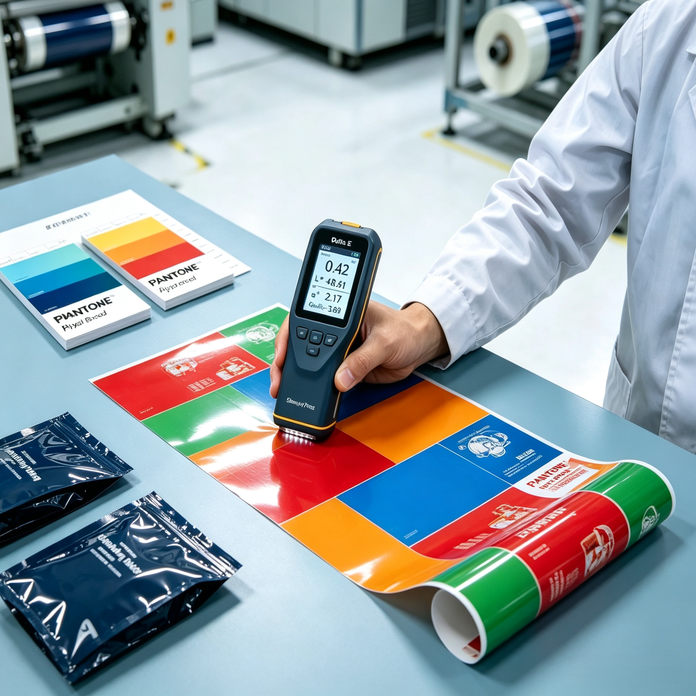

From Proof to Production: How to Avoid Color Discrepancies in Flexible Packaging Printing

For global brand managers and procurement teams, few experiences are more frustrating than receiving a mass production batch of flexible pouches that looks noticeably different from the approved digital design or physical proof. A shift in brand color — whether it's a duller red on a coffee pouch or an inconsistent shade across multi-SKU snack packaging — can damage brand recognition and erode consumer trust.
In flexible packaging, color consistency across different substrates (PET, BOPP, Kraft Paper, or Mono-PE) requires precise engineering, strict color management protocols, and advanced printing technology. Here is how professional packaging manufacturers bridge the gap between design proofs and mass production.
1. Understanding Why Color Discrepancies Happen
Achieving accurate color reproduction in flexible packaging is far more complex than printing on paper. Common causes for color variation include:
- Substrate Surface Variations: Clear film, metallized film (VMPET), aluminum foil, and natural Kraft paper all reflect light differently, drastically altering how printed inks appear.
- RGB to CMYK / Spot Color Conversion: Digital designs created in RGB monitor color spaces must be translated into CMYK process inks or exact PANTONE (PMS) spot colors for printing presses.
- Ink Layer Thickness & Drying Dynamics: In gravure and flexographic printing, variations in ink viscosity, drying speed, and cylinder cell depth can cause subtle batch-to-batch shade shifts.
2. Key Protocols for Perfect Color Alignment
To guarantee that mass production matches approved artwork, Shenying Packing enforces a multi-stage color control process:
- Standardized PANTONE Spot Color Matching: Rather than relying solely on CMYK process overlays for critical brand colors, we utilize custom-formulated PANTONE spot inks to maintain pinpoint accuracy across production runs.
- Substrate-Specific Proofing: Digital and physical proofs are generated directly on the actual target material (or metallic mockups) so brand managers evaluate color on the exact substrate used in final manufacturing.
- Spectrophotometer Measurement (Delta E Control): We utilize precise spectrophotometer technology to measure color deviations numerically (ΔE). By maintaining strict ΔE < 2.0 tolerances, we ensure variations remain imperceptible to the human eye.
3. Digital Printing vs. Rotogravure: Color Consistency Across Quantities
Whether running short-batch digital runs with zero plate fees or high-volume rotogravure production, maintaining cross-technology color fidelity is essential:
- Digital Printing Advantage: Advanced digital presses provide instant color calibration, making it ideal for multi-SKU lines where color consistency across different product flavors must be identical.
- Gravure Printing Precision: For large volume orders, precision-engraved cylinders combined with automated ink viscosity controls guarantee steady color repeatability from the first meter to the last.
Conclusion
Preventing color discrepancies requires transparency, precise color measurement standards, and close collaboration between brand designers and packaging engineers. By establishing clear color targets on actual substrates before press runs, brands can protect their visual identity across every market.
At Shenying Packing, our technical team combines BRC-certified production standards with rigorous color management tools to deliver vibrant, consistent flexible packaging every time.
Struggling with color consistency in your packaging?
Our technical team can help you establish precise color targets and ensure your brand identity stays consistent across every production run.
📧 Email: may.lee@shenyingpacking.com
💬 WhatsApp: +86 13424643780